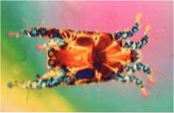
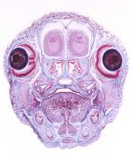
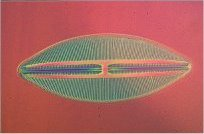
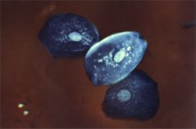
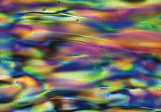

|
Mike Smith's Photo Gallery
Click on a picture to see an enlarged version.
Feather Mite Pteronyssoides truncatus
Whole mount - Zeiss Ultraphot
X10 N.A. 0.22, X4 eyepiece
Jamin Lebedoff illumination
Photomicrograph by Mike Smith
Neonatal Mouse Head (VS)
Section and photomicrograph by Mike Smith

Navicula Lyra
Photomicrograph by Mike Smith

Squamous Epithelium
Photomicrograph by Mike Smith

Liquid Crystal
no enlarged version available
Photomicrograph by Mike Smith
New photomicrographs will be added from time to time.
Contact Mike.
|